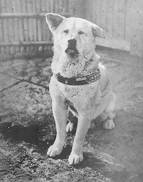
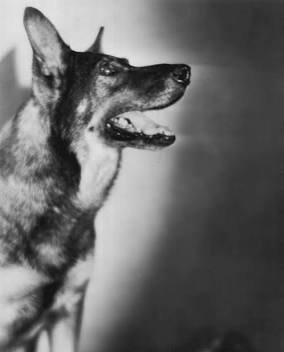
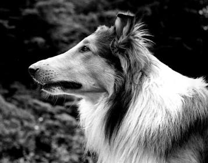
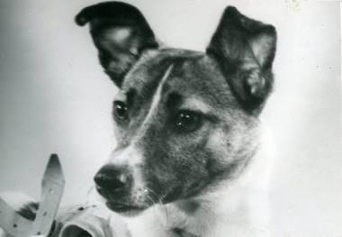

1 - Hachikō
Akita Inu • Japon (1923–1935)
Symbole universel de fidélité, Hachikō a attendu chaque jour le retour de son maître décédé devant la gare de Shibuya à Tokyo pendant près de dix ans.

Akita Inu • Japon (1923–1935)
Symbole universel de fidélité, Hachikō a attendu chaque jour le retour de son maître décédé devant la gare de Shibuya à Tokyo pendant près de dix ans.

Berger Allemand • France / États-Unis (1918–1932)
Sauvé des tranchées de Lorraine durant la Première Guerre mondiale par un soldat américain, il est devenu l'une des plus grandes stars canines du cinéma hollywoodien.

Colley à poil long • Royaume-Uni / États-Unis
Héroïne de romans, de films et de séries télévisées cultes, Lassie incarne le courage, l'intelligence et le dévouement sans faille envers sa famille.

Chienne croisée • URSS (1954–1957)
Premier être vivant à être placé en orbite autour de la Terre à bord de Spoutnik 2 en novembre 1957, elle est devenue une figure emblématique de la conquête spatiale.